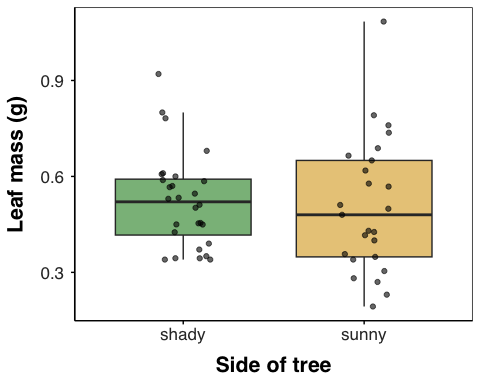
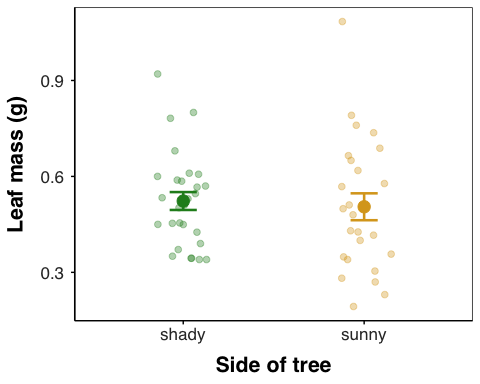
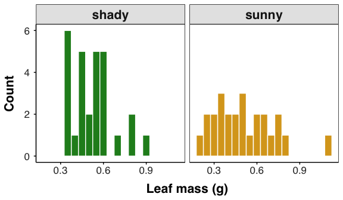

```{r}
#| label: load-data
# read the leaf data from the data/ folder ----
leaf_df <- read_excel("data/2026_09_03_data_sci_leaf_area.xlsx") %>%
clean_names()
```Lecture 07 — From Script to Report
One Quarto file: read the data, plot it, describe it, test it — Word, PDF, and slides
quarto
reproducibility
markdown
Why we write analyses as Quarto documents instead of loose scripts: YAML, Markdown, and code chunks with a chunk-option reference, then the whole leaf analysis start to finish — box plot, mean ± SE, histogram, summary statistics table, Welch’s t-test — rendered to Word, PDF, and RevealJS slides from one file.
Where we left off (Lectures 03–06)
- Read the leaf data with
read_excel()+clean_names() - Plotted it — box plots, mean ± SE with
stat_summary(), histograms - Described it —
group_by()+summary_stats(): n, mean, SD, SE, 95% CI - Everything so far lives in a
.Rscript
Note
✅ Key idea
You already know every piece of a real analysis. Today we put all of it — plus a t-test — into one document a human can read.
Goals for today
- Understand why a script alone is not enough
- Know where a Quarto file lives in your project
- Learn the three ingredients:
- YAML — the recipe at the top (one switch hides all the code)
- Markdown — formatted text, no clicking
- Code chunks — R that runs, plus the chunk options that control it
- Take the leaf data start to finish: plots → summary table → Welch’s t-test
- Render one file to Word, PDF, and RevealJS slides
Tip
🖐 You will hand in
leaf_report.qmd, leaf_report.docx, and leaf_report.pdf.
Tools today:
- Positron + Quarto (built in)
broom— turns test output into a table (installed with tidyverse)
Get the starter file:
References:
How to Use These Slides — Predict · Type · Render
This lecture runs in four short chunks. After each chunk you switch to the activity and fill in your own report.
For every snippet, do three things:
- Predict — before you Render, say what the document will show
- Type it out by hand — do not copy-paste
- Render and compare to your prediction
Note
✅ Why bother? (the evidence)
- Predicting first forces you to retrieve how Markdown and chunks behave. The surprise when you’re wrong is what makes it stick.
- Typing by hand builds muscle memory for YAML indentation and chunk syntax — exactly where beginners slip.
- Chunk → immediate practice keeps each new idea in working memory long enough to form a lasting schema.
🧩 Chunk 1 of 4 · Why Quarto, and Where the File Lives
We will cover: the pain of script-plus-copy-paste, literate programming, reproducibility, and where to save a .qmd so your paths just work.
Tip
🖐 After this chunk: Activity Part 1 (save the starter file at the top of your project and Render it).
Part 1 · The problem with scripts
What happens after the analysis?
Your .R script is great for running code. But when the lab report is due you have to:
- Run the script
- Copy each number into Word by hand
- Export every plot, then drag it in
- Re-do all of it when the data changes
Warning
⚠️ Watch out!
Every hand-copied number is a chance for a typo. Change one data point and the whole report is out of date.
Note
📊 Coming from Excel?
This is the same pain as pasting a chart into Word, then editing the spreadsheet and forgetting to update the chart.
The idea: keep code and writing together
Literate programming — write the story and the code in the same file.
- Your explanation sits next to the code that made it
- Tables and plots are computed, never copied
- Press Render → a finished document appears
one .qmd file → Render → Word / PDF / slidesChange the data, Render again, and every table and figure rebuilds itself. That is what scientists mean by reproducible.
Note
📖 New word
Quarto = the tool that turns one plain-text .qmd file into a polished document.
Note
✅ Key idea
A script does the analysis. A Quarto document does the analysis and explains it — and rebuilds itself on demand.
Where does the .qmd go? — the top of your project
leaf_project/
├── data/
│ └── 2026_09_03_data_sci_leaf_area.xlsx
├── figures/
├── scripts/
├── themes/
│ ├── r_themes_for_3_sizes.R
│ └── summary_stats_function.R
└── leaf_report.qmd <- HEREQuarto runs the code from the folder the .qmd is saved in. Save it at the top of the project and these paths work exactly as they do in your scripts:
read_excel("data/2026_09_03_data_sci_leaf_area.xlsx")
source("themes/summary_stats_function.R")
Note
✅ Key idea
.qmd at the top + short paths into subfolders = no here package, no ../. Same paths in the Console, in your scripts, and in the report.
Warning
⚠️ Watch out!
Save it inside documents/ and "data/..." breaks — Quarto would look for documents/data/. You would need "../data/..." everywhere. Don’t.
🛑 Pause — Do Activity Part 1 Now
🧩 Chunk 2 of 4 · Anatomy of a .qmd
We will cover: YAML (and the one line that hides all the code), Markdown, code chunks, and the chunk options you will use all term.
Tip
🖐 After this chunk: Activity Parts 2–4 (YAML, Markdown, chunk options).
Three parts, top to bottom
Every Quarto document has the same three ingredients:
1. YAML front matter ← the recipe (title, outputs, chunk defaults)
2. Markdown text ← your writing, formatted
3. Code chunks ← R that runs and shows resultsYou already read these every day — this whole lecture is a .qmd file.
Note
📖 New word
.qmd = a Quarto markdown file. Plain text you can open anywhere.
Ingredient 1 · YAML — the recipe
Note
🔮 Predict first: The execute: block below says echo: true. What changes in the whole document if you switch it to false?
---
title: "Leaf Mass on the Sunny and Shady Sides of a Tree"
author: "Your Name"
date: today
format: # one file -> three documents
docx:
toc: true
number-sections: true
pdf:
toc: true
number-sections: true
fig-pos: "H"
revealjs:
scrollable: true
smaller: true
execute: # defaults for EVERY chunk
echo: true # false = hide ALL the code at once
warning: false
message: false
---format:— which documents to buildexecute:— settings for every chunk; one line turns all the code on or off
Tip
One switch
Write with echo: true so you can see your code. Flip to echo: false for the version you hand in.
Warning
⚠️ Watch out!
YAML is space-sensitive: two spaces, never tabs.
Ingredient 2 · Markdown text
Note
🔮 Predict first: Before it renders, sketch what this becomes — which line is a big heading, which are bullets, what turns bold?
# Introduction
Leaves on the **shady** side of a tree may grow
larger to catch more of the limited light.
- **Null hypothesis:** mean mass is the same on both sides
- **Alternate hypothesis:** mean mass differs
<!-- a comment: never shows up in the output -->#heading,##smaller heading**bold**,*italic*,-bullets<!-- -->a note to yourself — the skeleton is full of them
Note
📊 Coming from Word?
**bold** is just the keyboard version of clicking the B button. Same result, no mouse.
Note
🎞 Bonus
In the slide version, every # becomes a section slide and every ## becomes a slide.
Ingredient 3 · Code chunks
A code chunk is fenced R that actually runs when you render:
```{r}
#| label: load-data
# read the leaf data from the data/ folder ----
leaf_df <- read_excel("data/2026_09_03_data_sci_leaf_area.xlsx") %>%
clean_names()
```- Opening fence
```{r}— closing fence``` - Lines starting
#|are chunk options - Then a
#comment saying what it does — same rule as your scripts
Tip
Insert a chunk: Ctrl/Cmd + Alt + I
Warning
⚠️ Watch out!
Every label must be unique. Two chunks named plot stop the Render:
Duplicate chunk label 'plot'The error names the label — go straight to it.
Chunk options — the reference card
| Option | What it does | Example |
|---|---|---|
label |
Names the chunk. fig- / tbl- at the front numbers it as a Figure / Table |
#| label: fig-boxplot |
echo |
Show (true) or hide (false) the code |
#| echo: false |
eval |
Run the code (true) or only show it (false) |
#| eval: false |
include |
false runs the code but hides both code and output |
#| include: false |
output |
false hides the results but keeps the code |
#| output: false |
warning / message |
Show or hide warnings / package messages | #| message: false |
fig-width / fig-height |
Figure size in inches | #| fig-width: 5 |
fig-cap |
Figure caption | #| fig-cap: "Leaf mass by side" |
tbl-cap |
Table caption | #| tbl-cap: "Summary statistics" |
tbl-colwidths |
Column widths in percent — tidy Word tables | #| tbl-colwidths: [30, 70] |
🛑 Pause — Do Activity Parts 2–4 Now
🧩 Chunk 3 of 4 · Plot It, Then Describe It
We will cover: the three plots you already know — box plot, mean ± SE, histogram — as named chunks with numbered captions, then a summary statistics table that looks right in Word.
Tip
🖐 After this chunk: Activity Parts 5–6 (the three plots and the summary table).
Start at the top: load the data
The setup chunk above it (already in your skeleton) loads readxl, tidyverse, janitor, broom, and source()s the theme file and summary_stats().
Warning
⚠️ Watch out!
Quarto runs the file top to bottom in a fresh R session — not whatever is sitting in your Console. Libraries and data must load in a chunk above anything that uses them.
Plot 1 · Box plot with the raw points
Note
🔮 Predict first: The label starts with fig-. What will the caption under the plot start with?
```{r}
#| label: fig-boxplot
#| fig-cap: "Leaf mass by side of the tree. Points are individual leaves."
#| fig-width: 5
#| fig-height: 4
# box plot with raw points on top ----
leaf_df %>%
ggplot(aes(x = shade, y = mass_g, fill = shade)) +
geom_boxplot(alpha = 0.6, outlier.shape = NA) +
geom_jitter(width = 0.15, alpha = 0.6) +
scale_fill_manual(values = c("sunny" = "goldenrod", "shady" = "forestgreen")) +
labs(x = "Side of tree", y = "Leaf mass (g)") +
theme_regular() +
theme(legend.position = "none")
```
- Same plot as Activity 03 — only the
#|lines are new fig-label → “Figure 1” in the captionfig-width/fig-heightsize this plot only
Plot 2 · Mean ± SE
```{r}
#| label: fig-mean-se
#| fig-cap: "Mean leaf mass (± 1 SE) by side of the tree."
#| fig-width: 5
#| fig-height: 4
# mean +/- standard error plot ----
leaf_df %>%
ggplot(aes(x = shade, y = mass_g, color = shade)) +
geom_jitter(width = 0.15, alpha = 0.35, size = 2) +
stat_summary(fun = mean, geom = "point", size = 4) +
stat_summary(fun.data = mean_se, geom = "errorbar", width = 0.15, linewidth = 0.9) +
scale_color_manual(values = c("sunny" = "goldenrod", "shady" = "forestgreen")) +
labs(x = "Side of tree", y = "Leaf mass (g)") +
theme_regular() +
theme(legend.position = "none")
```
Note
🔮 Predict: The error bars overlap almost completely. Keep that picture in mind — it predicts the t-test at the end.
Plot 3 · Histogram — the shape of each group
```{r}
#| label: fig-histogram
#| fig-cap: "Distribution of leaf mass on each side of the tree."
#| fig-width: 6
#| fig-height: 3.5
# one histogram per side ----
leaf_df %>%
ggplot(aes(x = mass_g, fill = shade)) +
geom_histogram(binwidth = 0.05, color = "white") +
facet_wrap(~shade) +
scale_fill_manual(values = c("sunny" = "goldenrod", "shady" = "forestgreen")) +
labs(x = "Leaf mass (g)", y = "Count") +
theme_regular() +
theme(legend.position = "none")
```
- Wider and shorter (
6 × 3.5) because it has two panels - The box plot hides the shape; the histogram shows it
Describe it · a summary statistics table
```{r}
#| label: tbl-summary
#| tbl-cap: "Summary statistics for leaf mass (g) on each side of the tree."
#| tbl-colwidths: [12, 7, 12, 15, 12, 12, 15, 15]
# summary statistics by side, printed as a table ----
mass_stats_df <- leaf_df %>%
group_by(shade) %>%
summary_stats(mass_g)
mass_stats_df %>%
knitr::kable(digits = 3,
col.names = c("Side", "n", "Mean", "Variance", "SD", "SE",
"CI low", "CI high"))
```| Side | n | Mean | Variance | SD | SE | CI low | CI high |
|---|---|---|---|---|---|---|---|
| shady | 28 | 0.523 | 0.022 | 0.148 | 0.028 | 0.466 | 0.580 |
| sunny | 25 | 0.505 | 0.044 | 0.210 | 0.042 | 0.418 | 0.592 |
summary_stats()— same helper as Activity 06knitr::kable()— data frame → real tabledigits = 3— rounds the whole tablecol.names =— readable headers, one per columntbl-colwidths:— eight columns, eight percents
In your text write @tbl-summary and Quarto prints “Table 1” for you.
Why tbl-colwidths? Tables in Word
Without widths, Word guesses — and it often guesses badly: a fat first column and the last column squashed until the numbers wrap.
#| tbl-colwidths: [12, 7, 12, 15, 12, 12, 15, 15]- One number per column, in order
- They are percents of the page width — aim for a total of 100
- Give short columns (like
n) less, headers likeVariancemore
Note
✅ Key idea
kable() makes the table; tbl-colwidths makes it line up in Word and PDF. Same numbers, readable layout.
🛑 Pause — Do Activity Parts 5–6 Now
🧩 Chunk 4 of 4 · Test It, Then Render Everything
We will cover: a Welch’s two-sample t-test (you met the t-test in intro bio), a clean results table, then hiding the code and rendering Word, PDF, and slides.
Tip
🖐 After this chunk: Activity Parts 7–8 (t-test, then render all three and hand in).
The Welch’s two-sample t-test
Question: is the difference between the two means bigger than we’d expect by chance?
```{r}
#| label: ttest
# Welch's two-sample t-test (does NOT assume equal variances) ----
leaf_ttest <- t.test(mass_g ~ shade, data = leaf_df, var.equal = FALSE)
leaf_ttest
```
Welch Two Sample t-test
data: mass_g by shade
t = 0.35579, df = 42.527, p-value = 0.7238
alternative hypothesis: true difference in means between group shady and group sunny is not equal to 0
95 percent confidence interval:
-0.08392774 0.11987117
sample estimates:
mean in group shady mean in group sunny
0.5230357 0.5050640 mass_g ~ shade— “mass by shade”: number on the left, two groups on the rightvar.equal = FALSE— Welch’s version: does not assume the two sides have the same variance- Look for t, df, and p-value in the printout
Note
📖 Why Welch’s?
It is safe whether or not the variances match, so it is R’s default and a sensible first choice. Next lecture takes it apart properly.
The same result as a table
```{r}
#| label: tbl-ttest
#| tbl-cap: "Welch's two-sample t-test of leaf mass by side of the tree."
#| tbl-colwidths: [20, 20, 15, 15, 15, 15]
# the same result as a clean table ----
leaf_ttest %>%
tidy() %>%
select(estimate1, estimate2, statistic, parameter, p.value, conf.low) %>%
knitr::kable(digits = 3,
col.names = c("Mean shady", "Mean sunny", "t", "df",
"p-value", "CI low"))
```| Mean shady | Mean sunny | t | df | p-value | CI low |
|---|---|---|---|---|---|
| 0.523 | 0.505 | 0.356 | 42.527 | 0.724 | -0.084 |
tidy()(frombroom) turns the printout into a data frame- then it is just
select()+kable()— tools you already have
Note
✅ Reading it
p is well above 0.05, so we fail to reject the null: these data show no difference in mean leaf mass between sides — just what the overlapping error bars predicted. That is a real result; report it honestly.
Hide the code — one line
For the version you hand in, flip the switch in the YAML:
execute:
echo: false # hide ALL the code
warning: false
message: false…and hide the raw t-test printout — the table already has those numbers. The chunk still runs, so leaf_ttest still exists:
```{r}
#| label: ttest
#| output: false
leaf_ttest <- t.test(mass_g ~ shade, data = leaf_df, var.equal = FALSE)
leaf_ttest
```
Note
✅ Key idea
execute: in the YAML = the default for every chunk. A chunk’s own #| line = the exception for that one chunk.
One file → Word, PDF, and slides
The Render button previews one format. To build everything listed under format:, use the Terminal tab (not the Console):
quarto render leaf_report.qmd| File | What it is |
|---|---|
leaf_report.docx |
Word report — hand in |
leaf_report.pdf |
PDF report — hand in |
leaf_report.html |
RevealJS slide show — press F for full screen |
Warning
⚠️ PDF needs LaTeX — once per computer
quarto install tinytex
Note
🎞 RevealJS
The same report becomes a web-based slide show: each # is a section slide, each ## a slide. These lecture slides are made exactly this way.
🛑 Pause — Do Activity Parts 7–8 Now
Wrap-up · What you can now do
- Explain why a Quarto report beats a script plus copy-paste
- Save a
.qmdat the top of the project sodata/...paths just work - Use the YAML to pick outputs and switch all code on/off with
echo - Write Markdown and named chunks with the options you need
- Take data start to finish: plots → summary table → Welch’s t-test
- Render one file to Word, PDF, and RevealJS slides
Note
✅ Key idea
From here on, every analysis can be a document that rebuilds itself from the raw data.
Up next — T-Tests I:
- Where the t-statistic comes from, and why Welch’s is the safe default
- Checking the assumptions first — normality (Shapiro–Wilk) and equal variances (Levene’s)
- …written up in your Quarto report